L'architecture, dessinée avec vous.
Atelier Overwall est un atelier d'architecture installé à Chamalières, dirigé par Hélène Lecerf.
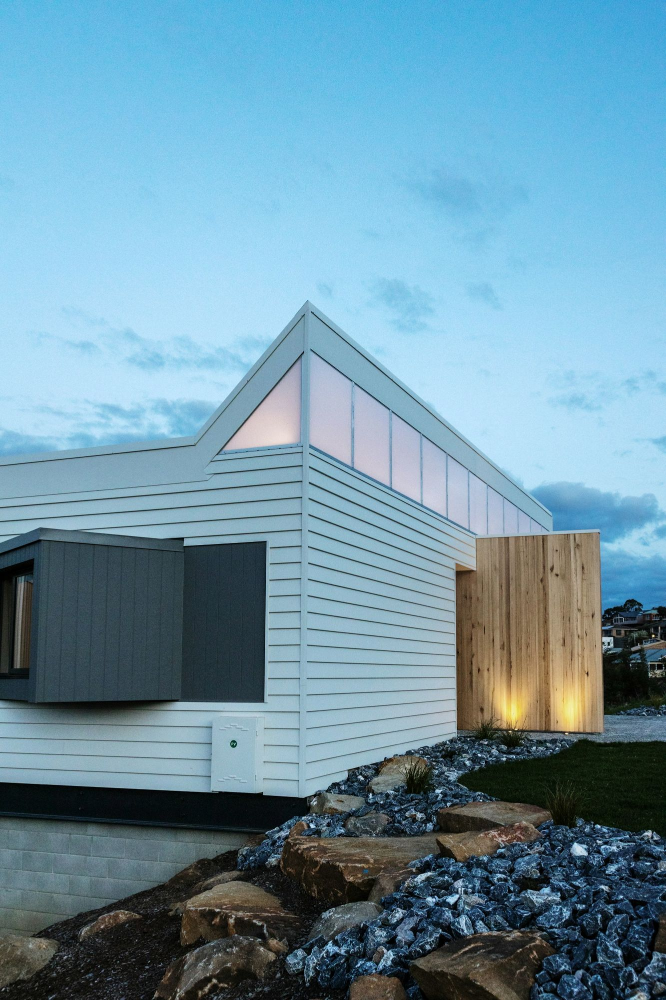
Un lieu se comprend avant de se dessiner. 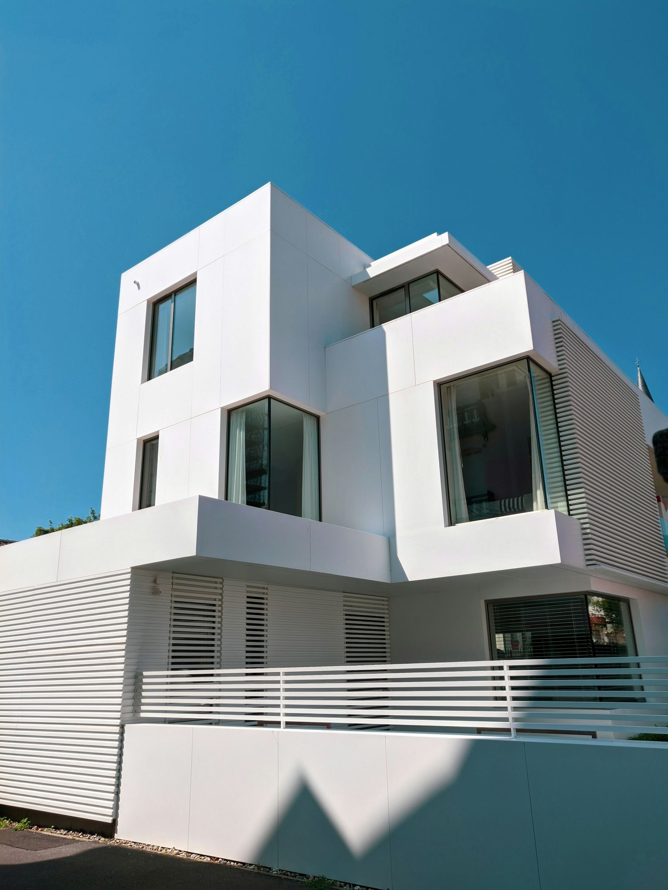 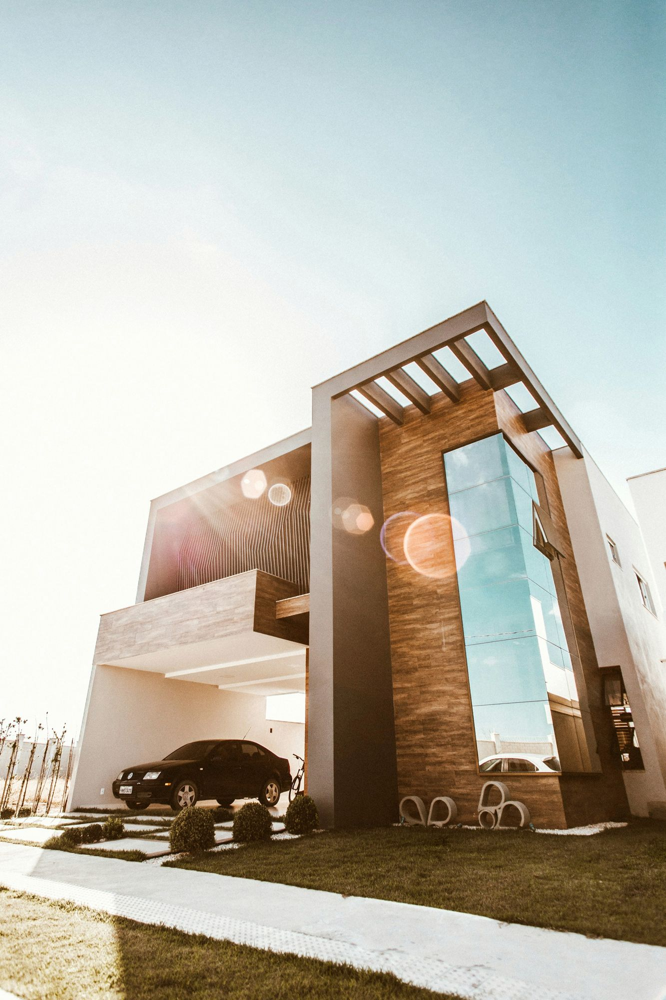
Des projets de toutes tailles.
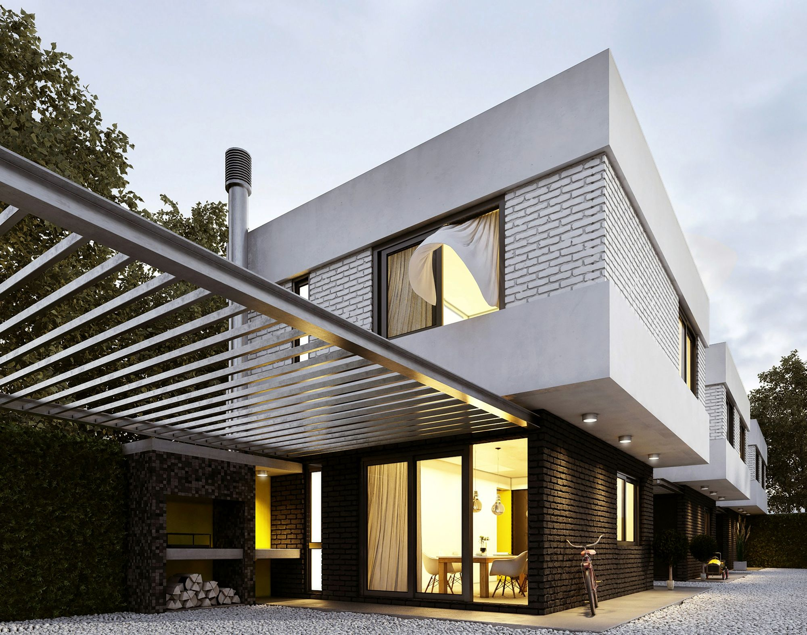
Maison
Construire pour un terrain et une vie.
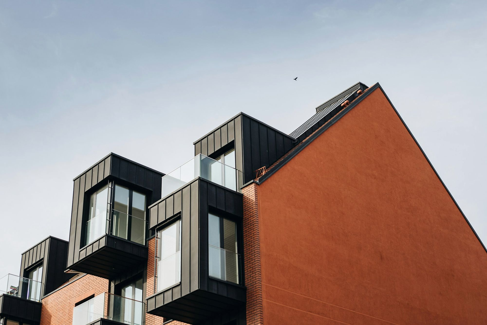
Extension
Agrandir en gardant l'existant juste.
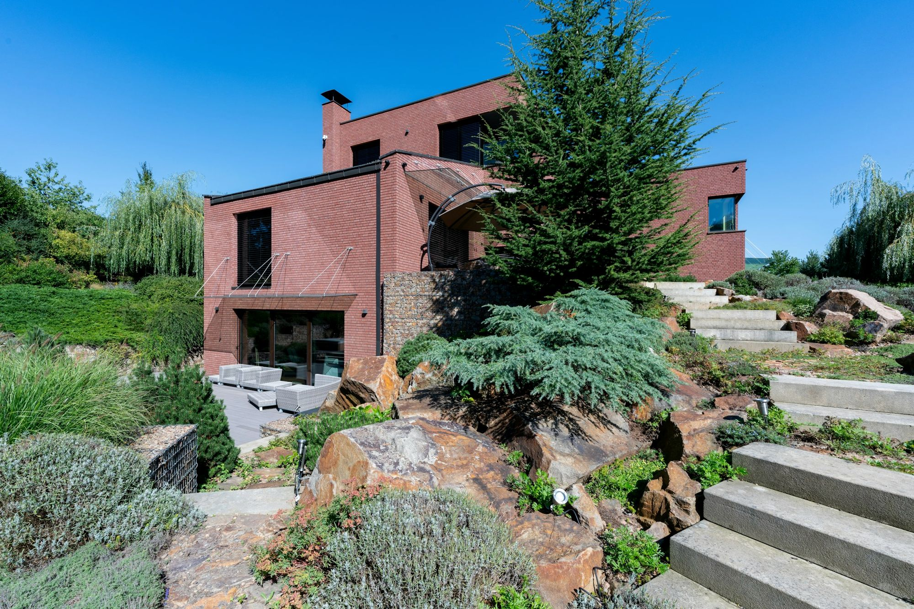
Rénovation
Transformer sans trahir.
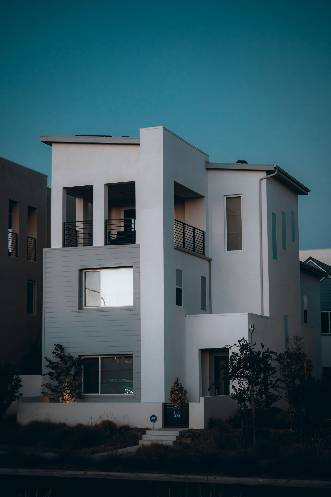
Intérieur
Dessiner l'espace de l'intérieur.
Domaines indicatifs et photos d'illustration, à valider avec l'atelier.
Un projet, trois temps.
- 01Écouter
Votre terrain, votre budget, votre manière de vivre.
- 02Dessiner
Esquisses et plans, repris avec vous jusqu'à la bonne version.
- 03Réaliser
Dossier d'autorisation, puis suivi du chantier.
Déroulé indicatif, à valider avec l'atelier.

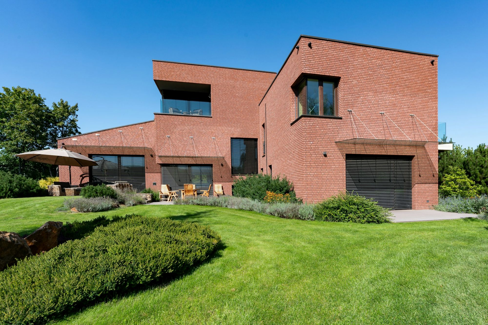
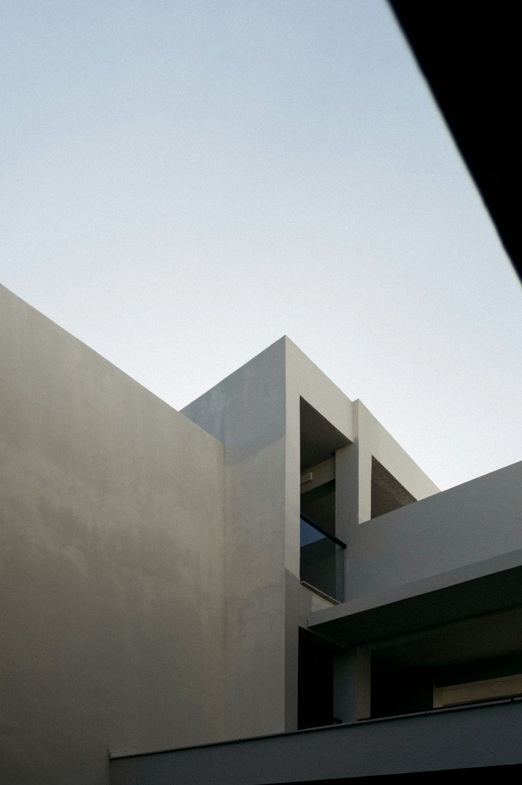
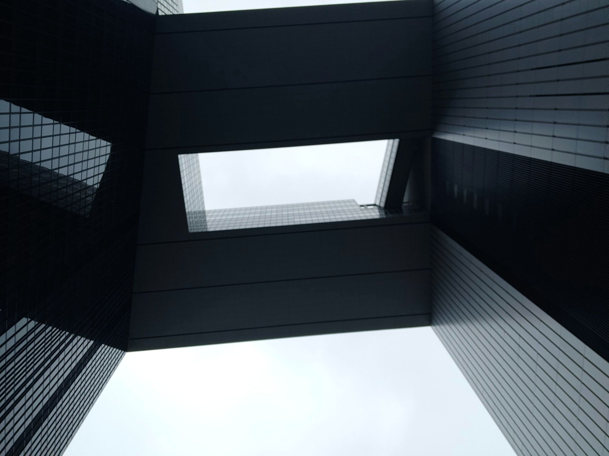
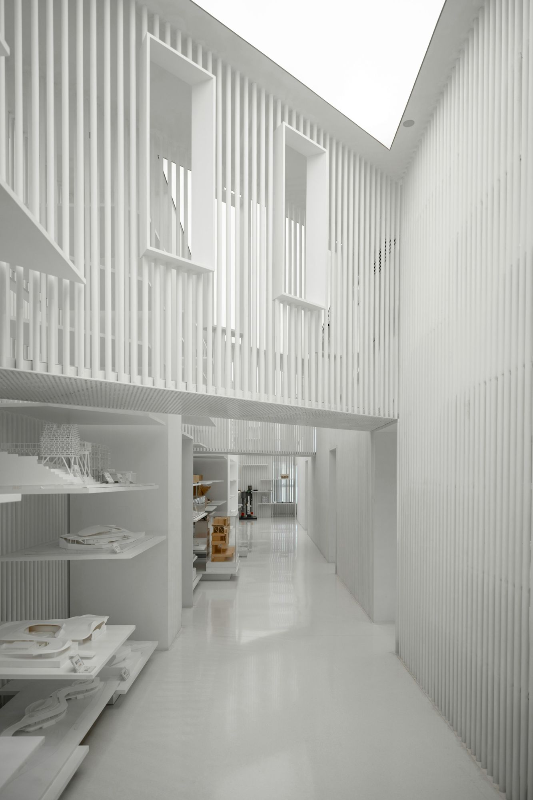
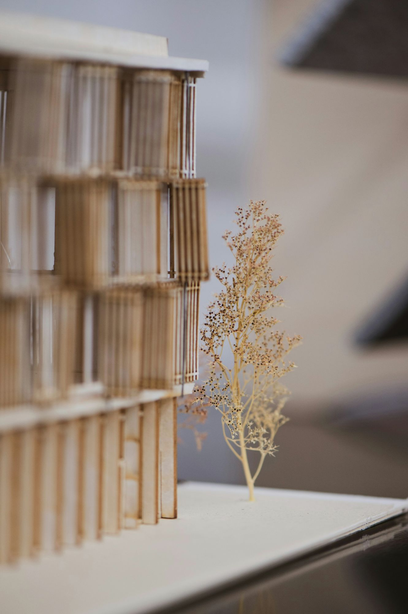
Photos d'illustration libres de droits, à remplacer par les projets de l'atelier.
Le dessin, à la main.

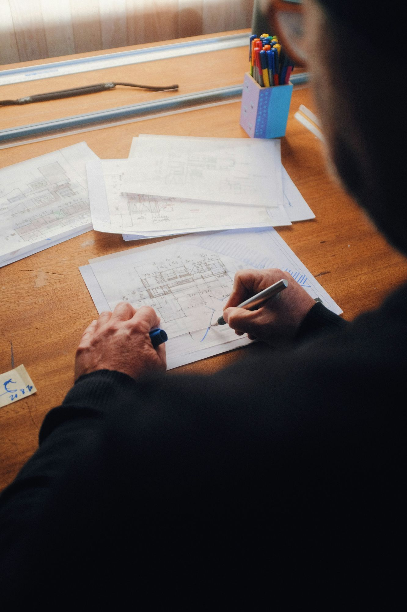
Architectes au travail : photos libres de droits, elles ne montrent pas l'équipe de l'atelier.
Questions fréquentes.
Quand faut-il un architecte ?
Pour construire une maison pour soi-même, le recours à un architecte est obligatoire au-delà de 150 m² de surface de plancher. L'atelier vous dit si votre projet est concerné.
Comment sont fixés les honoraires ?
Ils font l'objet d'un contrat écrit, selon la mission confiée. Ils se discutent au premier rendez-vous.
Pouvez-vous suivre le chantier ?
Le suivi de chantier peut être confié à l'architecte avec la conception, ou séparément. À préciser avec l'atelier.
Faut-il un permis de construire pour une extension ?
Selon la surface créée et le lieu, une déclaration préalable ou un permis est nécessaire. Le dossier fait partie de la mission d'un architecte.
Où se trouve l'atelier ?
2B avenue des Thermes, à Chamalières (63400).
Un projet à discuter ?
2B avenue des Thermes, 63400 Chamalières. Hélène Lecerf vous répond.